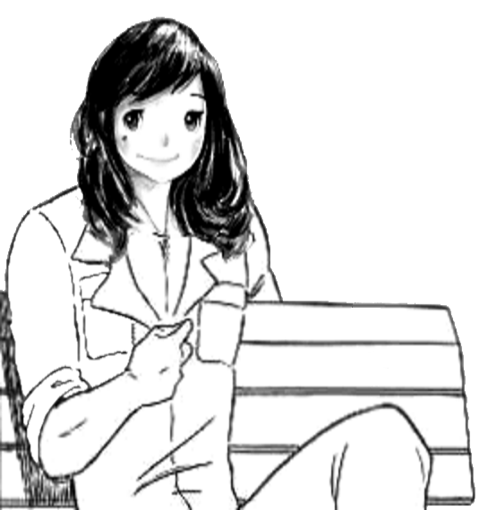

Live Google docs version found here
Now what do I do to actually learn Japanese?
Traveling to Japan to talk with natives, watching raw anime, and reading manga and novels before they’re translated all require the same fundamental skills and knowledge. While this guide is not going to be enough to teach you these skills, it will give you an idea of how to go about acquiring them.
With the basics covered in this guide you can get started with reading the written language, which you can then use to gain a more thorough understanding of Japanese. That being said, you should not hesitate to practice listening or speaking if you wish to do so. This guide only aims to introduce you to the Japanese language and show you how to get started. The rest is up to you.
The Japanese writing system consists of three scripts: hiragana, katakana and kanji.
Hiragana and katakana, together referred to as the kana, are two phonetic scripts, each containing 46 characters. They represent the same sounds, but are used for different purposes.
Hiragana (ひらがな) is used for grammatical parts and words which have no kanji form, or which the writer chooses not to use kanji for. Katakana (カタカナ) is used for loanwords and emphasis (similar to italics), among other purposes. For more information, see Tae Kim's articles on hiragana and katakana.
Hiragana will be your bread and butter for reading anything in Japanese. The approach to Japanese presented in this guide, as well as all the resources linked (except for those about the kana), are intended for people who can at least read hiragana. Thus, hiragana is the first thing that you are expected you learn.
Kanji are the third part of the Japanese writing system, and by far the most extensive. These logographic characters of varying complexity represent words or parts of words in conjunction with the kana. Japanese high school students are required to learn at least 2136 kanji as part of the curriculum, but around 3,000 are used in all facets of life.

Learning grammar is straightforward: Pick a grammar guide and read it. Tae Kim is often recommended for beginners (note that the whole guide is basic grammar, even the “advanced” section), but other options are listed on the resources page. You shouldn't expect to memorise everything you read the first time around in whatever guide you choose, but you should be aiming to understand it. The purpose of a grammar guide is not to grant you "mastery" over the language (which only comes through lots of practice and exposure), but simply to introduce you to the fundamentals of the language and give you the foundation that you need to start reading native material.
Once you've reached the end of the guide, you can start reading Japanese material while consulting back to the guide to solidify your memory. By reading Japanese you are actively practicing your grammar since you are using it constantly to understand what you are reading. Manga is the common recommendation for first getting into reading, especially Yotsubato. You may also consider doing the Dictionary of Japanese Grammar Anki deck to reinforce what you have learned.
This isn't the end of grammar. Tae Kim should serve you fine for the easiest manga, but it only covers the most common grammar. The Dictionaries of Japanese Grammar are the go-to resource for anything not covered in Tae Kim; they and various other options are documented in the resources section.
Anki is a flashcard program that helps you acquire vocabulary through spaced repetition. It is commonly used in conjunction with the Core2K/6K vocabulary deck by beginners to build up a basic vocabulary of common words in preparation for reading. Many people stop the Core2K/6K deck after reaching 2000 words; partly because the first 2000 words (Core2K) are a lot more common than the rest, and partly because of the significant time investment involved in completing Core6K. As you can expect even Core2K to take about 3 months to complete, some prefer to skip it and begin reading native material immediately. Whether or not you feel that the time investment is worth it depends on your tolerance for looking up unknown words. After finishing Core2K, you’ll at least know the majority of words in a given sentence, but you will still have to look up many words per page.
After completing Core2K (or skipping it entirely), some people begin a "mining deck". A mining deck is a vocabulary deck which you build up yourself with the unknown words that you encounter while reading. The Firefox add-on Rikaisama simplifies this process to a single key press, so that all you need to do to add a card to your deck is hover over a word and press "r" (instructions here and here).
You will need to learn all three writing systems to be able to read native material. Since hiragana and katakana are relatively small in number and simple in design, they can be learned through rote repetition in a short time-frame using a site like Kana Teacher. For kanji, however, because of their great number and complexity, there are various opinions on how to best approach them.
None of the methods described below are objectively superior to the others. The most important thing about any given method is not how "efficient" it is, but whether or not you enjoy it, or at the very least feel motivated enough to see it through to completion. Don't be afraid to try out different methods and see what works best for you.
There are two main ways to approach kanji. The simplest is to learn whole words without studying the individual kanji. The other is to study each kanji in isolation to learn its meaning and composition. Studying isolated kanji can grant you the ability to write by hand, and will most likely have a positive effect on your vocabulary retention. It’s up to you to decide whether or not you will benefit enough from learning kanji in isolation to merit the time and effort it takes.
The mnemonics method uses short stories or images to break down the kanji and make them easy to remember. Commonly used resources that encourage mnemonics are Remembering the Kanji, KanjiDamage and the Kodansha Kanji Learner’s Course. Each has its own set of mnemonics and slightly distinct methods, so you should glance through each and pick whichever suits you — it's ultimately not that important. For more information and the necessary Anki decks, see the resources page.
Kanji can also be learnt simply by writing or reviewing them repetitively. You should first familiarize yourself with the radicals that kanji are composed of, as explained in “Radical approach” below. An Anki deck with production/recall-type cards could be very conducive to this method since, rather than writing out characters at random, you would instead be frequently writing out the ones you're struggling to remember, while only occasionally writing out ones which you remember consistently. The general consensus is that the readings for the characters should be learned through vocabulary, so you should just focus on associating each kanji with its meaning(s). If you're struggling with a particular kanji, don't be afraid to make up a mnemonic based on its radicals.
If you choose not to study kanji in isolation, you will still eventually learn to recognize their meanings and readings as you learn new words. Learning new words is something you need to do anyway, so many people skip individual kanji study altogether. Either approach will result in success so long as you persist, so the choice comes down to what method you personally find easier. If you don't want to study kanji, you can likely work through a vocab deck without doing so. But if you are slow to pick up on kanji while learning vocabulary or have poor retention, consider studying kanji individually. It's a trade-off between starting out with "more vocabulary now, smaller foundation" or "more foundation now, less vocabulary".

For those who feel that methods like RTK and KanjiDamage take too much time, but don't feel confident diving head-first into kanji as with the kanji-through-vocab approach described above, one method to consider is simply dedicating a week or two to studying radicals - the 200 or so building-blocks which make up the kanji. This approach, rather than teaching you to write and recognise a set of ~2000 common kanji, gives your brain the information it needs to mentally deconstruct the kanji it encounters into their base components, which may make it easier for you to both learn to recognise them and to avoid mixing them up with other kanji which look similar. In any case, it should stop your brain from seeing them as simply a bunch of random squiggles. You can find an Anki deck here which contains all of the radicals, along with their meanings in English.
A guide to the resources mentioned in this guide can be found here.
An extensive collection of resources for download can be found here.
How long does it take to learn Japanese?
A very long time.
Some will comment that, at a good pace, fluency is achievable in 4 years. Thinking in terms of “I have 4 years to become fluent” may help to prevent you from making the common beginner mistake of rushing, crashing and burning due to short term thinking (e.g. setting your new cards/day limit to 100 in Anki because you think it is taking too long to get through your deck, then finding yourself totally overwhelmed in a week’s time and giving up).
Namasensei
Namasensei is often watched by beginners learning Japanese, because his alcohol-fueled antics are strangely both entertaining and powerfully motivating for some anons. Unfortunately, this is a double-edged sword; as he’s always shitfaced drunk, tends to teach in an ineffective fashion, has terrible handwriting, and messes up the stroke order of some of the kana.
[His te-form video teaches you that the te-form is the command form, which is misleading and will cause you a great deal of confusion if you actually try to read anything with that assumption. It will also confuse you when you read a grammar guide and see it being explained as having a completely different function (a conjunction used to make compound sentences). When the te-form appears to be being used to make a (light) command, what is really going on is that "てください" is being contracted to just "て".]
Using Google for Japanese:
Set your search to google.co.jp for (much) better results.
I can’t figure out what this means
Google 「X」, 「X」とは, or 「X」という言葉(の使い方) where X is your inquiry. 「ｘ」ってどういう意味, の意味 etc. also yields results.
How to find reading materials?
Search for the Japanese title in Japanese along with the keywords 一般小説 青空文庫形式 txt
P2P: Nyaa, Share, Perfect Dark
Check the Cornucopia of Resources.
What is the difference between x and y?
Searching google for 「ｘとｙの違い」or 「"x" "y" "違い"」 will usually find you the answer you’re looking for. If you can’t understand the answer you find, you aren’t on a level where you should worry about the difference of x and y yet.
When should I start reading?
You can start reading as soon as you finish a grammar guide. Reading will be somewhat easier if you know 2000 or so words, but you shouldn't delay it beyond that point. Your first attempt at reading will be difficult regardless of how many words you know.
は vs が
The Dictionary of Basic Japanese Grammar has one of the best explanations on the matter and is relatively concise. A great (but very long) explanation can also be found in Making Sense of Japanese Grammar - What the Textbooks Don't Tell You (available in the CoR). I would refer to those, and take all others with a grain a salt or not at all.
How many words do natives know?
Words only include the dictionary form. Proper nouns and compound words are excluded. For a different study addressing the related question of how many words you need to know to achieve adequate comprehension, see this image.
These two words have the same reading, and meaning. How do I distinguish them, and why is Japan trying to fuck me?
They have the same English meaning. Which, in case you couldn’t guess it, means you’ve gotta look it up in a J>J dictionary, or otherwise perform a Google search. If your grammar isn’t at a level where you can understand the descriptions, or distinctions you should be bettering your grammar instead of your vocab. If you can only read English definitions, then assume they are flawed before assuming that you’ve been fucked.
How do I choose which kanji reading to use? Should I learn onyomi and kunyomi of kanji?
Readings for words are usually clearly defined, and any of the dictionaries in the sections above will tell you how a word is read. For more in-depth information on readings, refer to this wikipedia entry.
What's this WaniKani thing?
WaniKani is a paid website which teaches you 6000 words and 2000 kanji. This may seem like a nice prospect, but reality is that the free open source software Anki will accomplish exactly the same for you. WaniKani limits your potential by providing you with a fixed schedule that you cannot exceed. With Anki, you can learn at whatever pace you wish and it does not cost you anything. Anki is also highly modular and can be adjusted to suit your preferences, while WaniKani offers next to no customization. If you still want to use WaniKana's content, there is a free Anki deck in the CoR.
{kind=link}
{kind=link}
{kind=link}
{kind=link}
{kind=link}